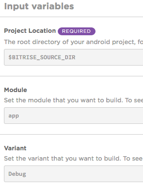
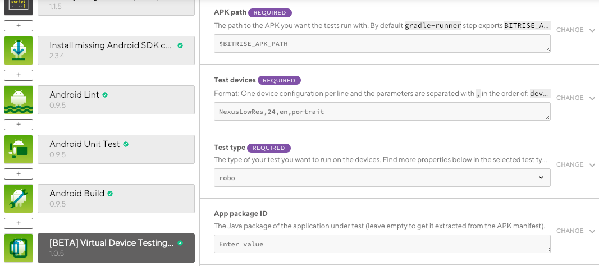
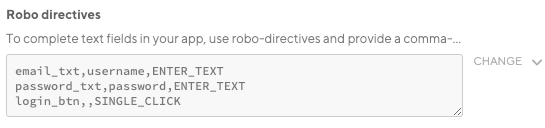
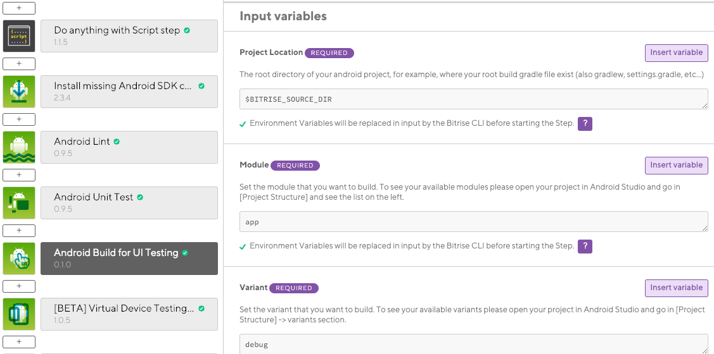
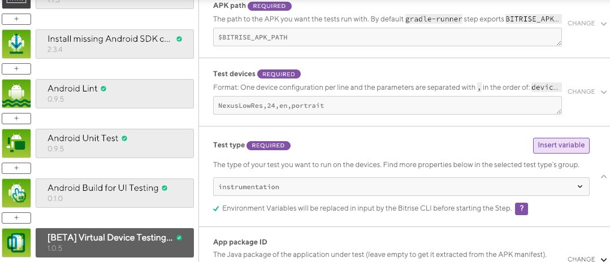
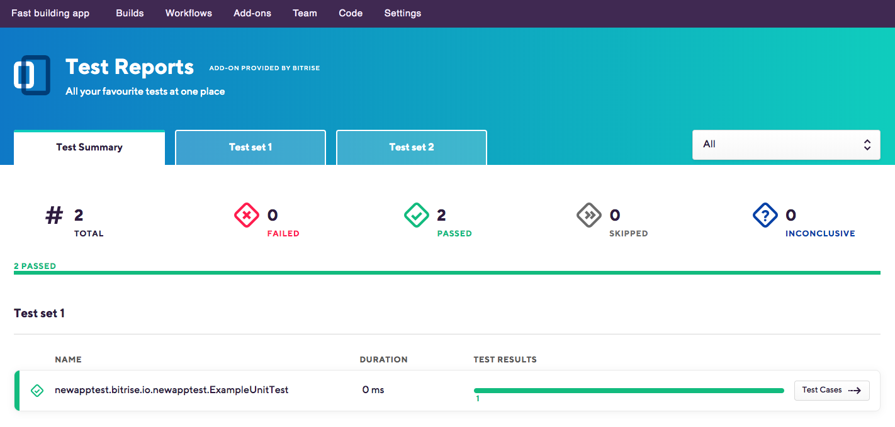
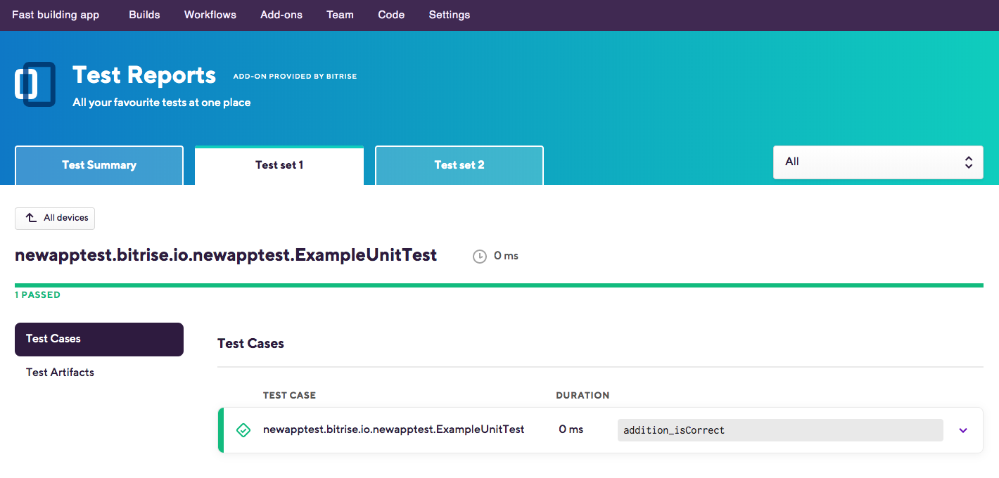

Device testing for Android
With Bitrise’s Android virtual device testing solution, you can run UI tests on emulators without having to set up and register your own devices.
With Bitrise’s Android virtual device testing solution, you can run UI tests on emulators without having to set up and register your own devices.
Limitations
The maximum duration for virtual device testing is 30 minutes.
A single build can contain only one Virtual Device Testing Step performing one type of test (instrumentation, robo or gameloop).
Our device testing solution is based on Firebase Test Lab. You can find the resulting logs, videos and screenshots on Bitrise.
Running tests
With Bitrise, you can choose from 3 different test types:
-
robo (default test type in Bitrise).
-
instrumentation.
-
gameloop.
If you want to read up on the difference between these test types, take a look at Firebase’s documentation.
There is a small difference between configuring your workflow for robo and instrumentation tests, so let’s see them separately!
Running robo tests
Workflow Editor
bitrise.yml
-
Open the Workflow you want to use in the Workflow Editor.
-
Add the Android Build Step to your Workflow to export an APK.
The Step stores the APK path in an Env Var. You will need this Env Var later.
-
Add the
Debugtask to the Variant Step input field. -
Add Virtual Device Testing for Android Step after the Android Build Step.
-
Set the
APK pathinput field. -
Set the Test type input to .
-
Add the type of test device in the Test devices input field.
If choosing a different device than the default, your input should have the format of
deviceID,version,language,orientationseparated with,. Find the list of the available devices here. -
Start a build and check your test results.
-
In the
bitrise.ymlfile, find the Workflow you want to use or create a new one. -
Add the
android-buildStep to your Workflow.The Step stores the APK path in an Env Var. You will need this Env Var later.
my-workflow: steps: - git-clone: {} - android-build: inputs: -
Set the
variantinput toDebug.my-workflow: steps: - git-clone: {} - android-build: inputs: - variant: Debug -
Add the
virtual-device-testing-for-androidStep.my-workflow: steps: - git-clone: {} - android-build: inputs: - variant: Debug - virtual-device-testing-for-android: inputs: -
Set the
app_pathinput field: by default, its value is the$BITRISE_APK_PATHEnv Var. This Env Var is exported by theandroid-buildStep.my-workflow: steps: - git-clone: {} - android-build: inputs: - variant: Debug - virtual-device-testing-for-android: inputs: - app_path: $BITRISE_APK_PATH -
Set the
test_typeinput torobo.my-workflow: steps: - git-clone: {} - android-build: inputs: - variant: Debug - virtual-device-testing-for-android: inputs: - test_type: robo - app_path: $BITRISE_APK_PATH -
Add the type of test device in the
test_devicesinput field.Your input should have the format of
device ID,version,language,orientationseparated with a,.Supported models
You can check the supported device models by running the
gcloud firebase test android models list --filter=virtualgcloud firebase test android models list --filter=virtualcommand in the Google Cloud CLI.my-workflow: steps: - git-clone: {} - android-build: inputs: - variant: Debug - virtual-device-testing-for-android: inputs: - test_type: robo - app_path: $BITRISE_APK_PATH - test_devices: 'Nexus9,24,en,portrait' -
Start a build and check your test results.
Setting user input with Robo directives for successful robo tests
If your app needs specific user interaction for a successful robo test, you can use the Robo Directives input field to set those necessary inputs. For example, certain UI elements of the app are only accessible for robo testing if the required user inputs (username and email address) are populated for log in.
-
Click the Virtual Device Testing for Android Step in your workflow.
-
Click the Robo Test section.
-
Find the Robo directives input field and set your required user input directives.
-
provide a comma-separated list of key-value pairs, where the key is the Android resource name of the target UI element, and the value is the text string. EditText fields are supported but not text fields in WebView UI elements. For example, you could use the following parameter for custom login:
username_resource,username,ENTER_TEXT password_resource,password,ENTER_TEXT loginbtn_resource,,SINGLE_CLICK
-
One directive per line, the parameters are separated with , character. For example: ResourceName,InputText,ActionType.
 -
Based on the input you provide, you can successfully run a robo test (even on pages that are only accessible with a specific user input) and check the test results on the Test Reports page. The test results can be, for example:
-
Screenshots.
Recorded video.
Logs.
Files.
Here is a screenshot of a successful robo test, where the robo test got all the way through to My application by populating the email and password fields first with the pre-defined directives from the Robo directives.
Running instrumentation tests
Workflow Editor
bitrise.yml
-
Open the Workflow you want to use in the Workflow Editor.
-
Add the Android Build for UI testing Step to your Workflow.
-
To export an APK and a Test APK, you have to set the following input fields in the Android Build for UI testing Step.
-
Project Location: the root directory of your Android project.
-
Module: set the module you wish to build.
-
Variant: set the variant you wish to build (usually
Debug).
The Step outputs will be
BITRISE_APK_PATH(which is the path of the generated APK after filtering) andBITRISE_TEST_APK_PATH(which is the path of the generated test APK after filtering). -
-
Add the Virtual Device Testing for Android Step right after the Android Build for UI testing Step.
-
Set the Test type input to
instrumentation.Our Android Build for UI Testing Step exports an APK and a Test APK and their paths get automatically set in the APK path and the Test APK path input fields of the Virtual Device Testing for Android Step.
-
Add the type of test device in the Test devices input field.
If choosing a different device than the default, your input should have the format of
device ID,version,language,orientationseparated with a,. -
Start a build and check your test results.
-
In the
bitrise.ymlfile, find the Workflow you want to use or create a new one. -
Add the
android-build-for-ui-testingStep to your Workflow.my-workflow: steps: - git-clone: {} - android-build-for-ui-testing: inputs: -
To export an APK and a Test APK, you have to set the following input fields in the Android Build for UI testing Step.
-
project_location: the root directory of your Android project. -
module: set the module you wish to build. -
variant: set the variant you wish to build (usually debug).
my-workflow: steps: - git-clone: {} - android-build-for-ui-testing: inputs: - module: module - variant: variant - project_location: $BITRISE_SOURCE_DIRThe Step outputs will be
BITRISE_APK_PATH(which is the path of the generated APK after filtering) andBITRISE_TEST_APK_PATH(which is the path of the generated test APK after filtering). -
-
Add the
virtual-device-testing-for-androidStep right after the Android Build for UI testing Step.my-workflow: steps: - git-clone@8: {} - android-build-for-ui-testing: inputs: - module: module - variant: variant - project_location: $BITRISE_SOURCE_DIR - virtual-device-testing-for-android: inputs: -
Set the
test_typeinput toinstrumentation.Our
android-build-for-ui-testingStep exports an APK and a Test APK and their paths get automatically set in theapp_pathand thetest_apk_pathinput fields of thevirtual-device-testing-for-androidStep.my-workflow: steps: - git-clone: {} - android-build-for-ui-testing: inputs: - module: module - variant: variant - apk_path_pattern: '*/build/outputs/apk/*.apk' - arguments: arg - project_location: $BITRISE_SOURCE_DIR - virtual-device-testing-for-android: inputs: - test_type: instrumentation - app_path: $BITRISE_APK_PATH - test_apk_path: $BITRISE_TEST_APK_PATH -
Add the type of test device in the
test_devicesinput field.Your input should have the format of
device ID,version,language,orientationseparated with a,.my-workflow: steps: - git-clone: {} - android-build-for-ui-testing: inputs: - module: module - variant: variant - apk_path_pattern: '*/build/outputs/apk/*.apk' - arguments: arg - project_location: $BITRISE_SOURCE_DIR - virtual-device-testing-for-android: inputs: - test_devices: 'Nexus9,24,en,portrait' - test_type: instrumentation - test_apk_path: $BITRISE_TEST_APK_PATH - app_path: $BITRISE_APK_PATH -
Start a build and check your test results.
Checking test results
Test Reports display the most important information about all the tests you ran on the Test Summary tab. You will see all the tests you ran, their duration, and their results. You can also click on the tabs of the individual tests to see their details.
To access the result of a particular test:
-
Open the Bitrise CI page and select your project from the project list.
-
Select the build you want to check out.
-
Go to the Tests tab.
-
You can see failed tests on the Tests tab itself. If you had no failed tests, click the button.
-
On the Test Summary tab, find the test you want to check. Alternatively, on the top bar, click the tab of the test set you want to check out.To filter tests based on their results, open the menu on the top right, which is set to All by default.
 -
Click Test cases to see the details.
UI tests are grouped according to device while unit tests are grouped according to test cases.
You will find:
-
The total number of tests you ran, as well as the ratio of successful and failed tests.
-
The duration of each individual test (both unit tests and UI tests).
-
In the case of UI tests, the orientation and the locale of the device.

You can check, depending on the test type:
-
Individual test cases
-
Performance data
-
Videos
-
Screenshots
-
Test artifacts
-
Logs
As noted above, this depends on test type, too: for unit tests, you won’t see screenshots or videos, of course.